Metric | Value |
|---|---|
Total pesticide poisoning deaths | 10,652 |
Analysis years | 1997 - 2024 |
% Male | 60.8% |
Median age (years) | 28 |
% Accidental/unspec. | 24.5% |
% Self-harm | 2.5% |
% Assault | 0% |
% Undetermined | 73% |
Pesticide Poisoning Deaths in South Africa
pesticide-poisoning
injury-mortality
vital-registration
icd10
epidemiology
Epidemiology of pesticide poisoning deaths (ICD-10 X48+X68+X87+Y18; StatsSA MACOD 2022, Table 4.12) from the national vital registration system, 1997–2024
1 Overview
Pesticide poisoning is a priority indicator for injury mortality surveillance in South Africa, given its established role as a leading method of self-harm in rural/agricultural settings globally (1). This page describes the epidemiology of pesticide poisoning deaths recorded in the national vital registration (VR) system, restricted to the four ICD-10 codes StatsSA validates for pesticide poisoning specifically — StatsSA MACOD 2022, Table 4.12 (interim definition, pending confirmation against the 2023 MACOD release), checked by Debbie Bradshaw. This is a deliberately narrower scope than a generic “poisoning” analysis (which would also include drugs, alcohol, gases and other chemicals under X40–X49/X60–X69/X85/Y10–Y19): each of the four codes below maps to pesticides specifically, one per intent category.
| ICD-10 code | Category | Description |
|---|---|---|
| X48 | Accidental / unspecified | Unintentional pesticide exposure or intent not documented on DNF (ICD-10 default) |
| X68 | Self-harm | Intentional self-poisoning by pesticides |
| X87 | Assault | Pesticide poisoning inflicted by another person |
| Y18 | Undetermined | Intent unknown or not specified (pesticide poisoning) |
ImportantCaution: intent categories reflect ICD-10 coding defaults, not certified intent
South Africa’s death notification form (DNF) does not include a field for manner of death, contrary to the WHO-recommended Medical Certificate of Cause of Death (2). Under ICD-10 Volume 2 coding rules, when manner of death is not stated by the certifier, external cause deaths are assigned to the most appropriate code by default (3) — in practice this can route to either the Accidental or the Undetermined code depending on how the cause was documented and coded, and the empirical pattern differs markedly by cause.
For pesticide poisoning specifically, the dominant code is “Undetermined” (Y18), not “Accidental.” In this dataset, Y18 accounts for roughly three-quarters of all pesticide poisoning deaths, versus about a quarter for X48 (Accidental/unspecified) and only a few percent for X68 (Self-harm); X87 (Assault) is vanishingly rare. This is the opposite pattern to many other external-cause categories (e.g. Groenewald et al. (2023) found 98.7% of Stats SA firearm deaths coded accidental, versus 88.5% homicide on forensic NCoDV review (4)) and is consistent with the international literature on pesticide self-poisoning: non-forensic certifiers are often unable or unwilling to certify suicidal intent without a clear circumstantial history (e.g. a note, witnessed ingestion, psychiatric history), so many genuine self-harm pesticide deaths are likely coded Y18 rather than X68 (1,5).
Interpretation: The large Y18 (Undetermined) share in these data should not be read as “intent unknown and therefore unimportant” — it most plausibly contains a substantial number of unrecognised self-harm deaths, consistent with pesticides’ known role as a common suicide method. X48 (Accidental) likely also contains some genuine self-harm and a small number of assault deaths absorbed by the same DNF manner-of-death omission. Accurate intent-stratified estimates require triangulation with forensic mortality surveillance (NCoDV), Poisons Information Centre call records, and other independent sources (6).
1.1 Summary statistics
2 Trends over time
2.1 Annual deaths and crude death rate
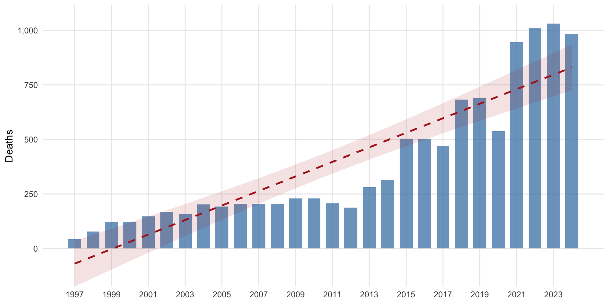
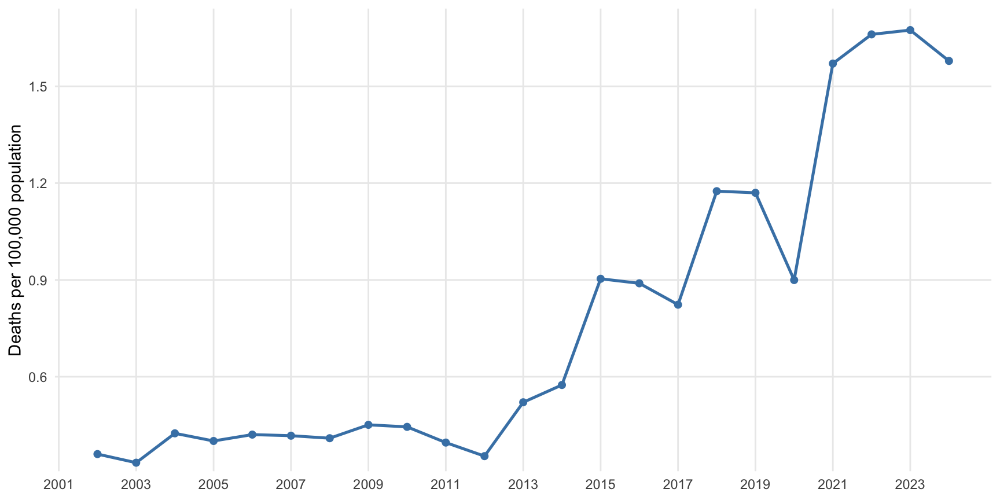
2.2 Deaths by intent
The “Undetermined” (Y18, green) category dominates — the opposite pattern to many other external causes, where the ICD-10 default assigns an accidental code whenever manner of death is not stated. For pesticides, non-forensic certifiers appear more likely to leave intent undetermined than to default to accidental — see the methodological note above (1–3).
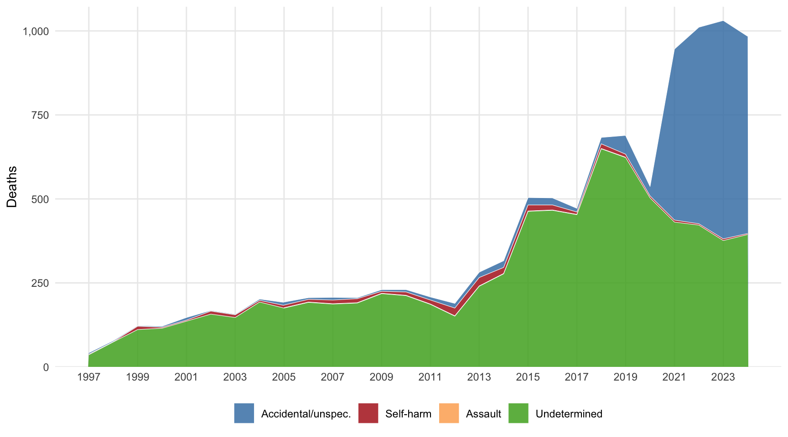
2.3 Annual summary
Year | Total | Accidental/unspec. | Self-harm | Assault | Undetermined | % Male | Median age |
|---|---|---|---|---|---|---|---|
1,997 | 42 | 4 | 2 | 0 | 36 | 54.8 | 28.5 |
1,998 | 78 | 3 | 1 | 0 | 74 | 55.1 | 25.5 |
1,999 | 123 | 2 | 10 | 0 | 111 | 65.9 | 26.0 |
2,000 | 121 | 3 | 3 | 0 | 115 | 57.0 | 27.0 |
2,001 | 147 | 8 | 3 | 0 | 136 | 59.2 | 28.0 |
2,002 | 168 | 2 | 9 | 0 | 157 | 59.5 | 26.0 |
2,003 | 157 | 2 | 8 | 0 | 147 | 51.6 | 28.0 |
2,004 | 202 | 4 | 5 | 0 | 193 | 60.9 | 30.0 |
2,005 | 193 | 9 | 8 | 1 | 175 | 66.3 | 27.0 |
2,006 | 205 | 5 | 8 | 0 | 192 | 60.0 | 28.0 |
2,007 | 206 | 8 | 11 | 0 | 187 | 64.6 | 29.0 |
2,008 | 205 | 3 | 12 | 0 | 190 | 60.0 | 30.0 |
2,009 | 229 | 5 | 6 | 0 | 218 | 69.4 | 33.0 |
2,010 | 229 | 7 | 10 | 0 | 212 | 62.9 | 30.0 |
2,011 | 207 | 9 | 12 | 0 | 186 | 71.5 | 31.0 |
2,012 | 188 | 14 | 23 | 0 | 151 | 61.2 | 31.5 |
2,013 | 281 | 16 | 25 | 0 | 240 | 59.1 | 28.0 |
2,014 | 315 | 20 | 18 | 0 | 277 | 62.9 | 27.0 |
2,015 | 503 | 22 | 18 | 0 | 463 | 62.0 | 26.0 |
2,016 | 502 | 21 | 15 | 0 | 466 | 59.8 | 26.0 |
2,017 | 471 | 11 | 7 | 0 | 453 | 55.8 | 26.0 |
2,018 | 682 | 19 | 14 | 0 | 649 | 61.0 | 27.0 |
2,019 | 689 | 56 | 9 | 1 | 623 | 58.6 | 28.0 |
2,020 | 537 | 28 | 6 | 0 | 503 | 58.5 | 28.0 |
2,021 | 946 | 509 | 6 | 0 | 431 | 61.6 | 27.0 |
2,022 | 1,011 | 585 | 4 | 0 | 422 | 60.7 | 30.0 |
2,023 | 1,031 | 650 | 5 | 0 | 376 | 61.8 | 27.0 |
2,024 | 984 | 587 | 3 | 0 | 394 | 59.6 | 29.0 |
3 Epicurve
3.1 Monthly time series
The monthly epicurve shows all pesticide poisoning deaths from 1997 to 2024, stacked by intent category. The overlaid LOESS smoother (dark line with 95% CI) tracks the long-term trajectory of total counts while the stacked colours reveal whether any compositional shift in intent type accompanied the volume change.
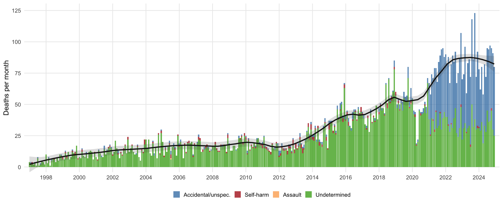
3.2 Monthly seasonality
Average deaths per calendar month (averaged across all years), with ±1 SD error bars. A consistent seasonal pattern would suggest environmental or behavioural drivers (e.g. agricultural pesticide exposure/availability varying with the farming season).
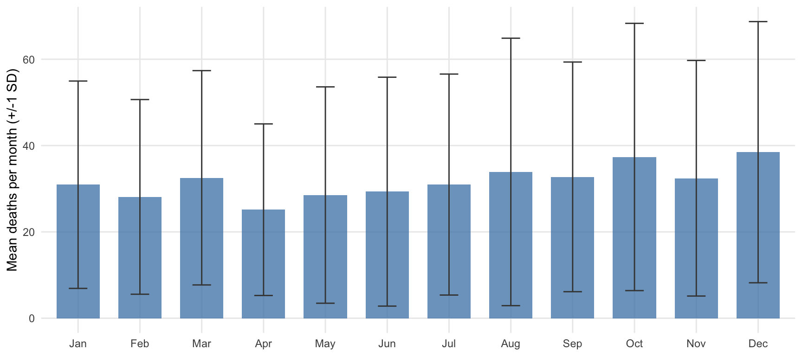
4 Age and sex
4.1 Age-sex pyramid
The population pyramid shows the sex- and age-distribution of all pesticide poisoning deaths. Males to the left, females to the right.
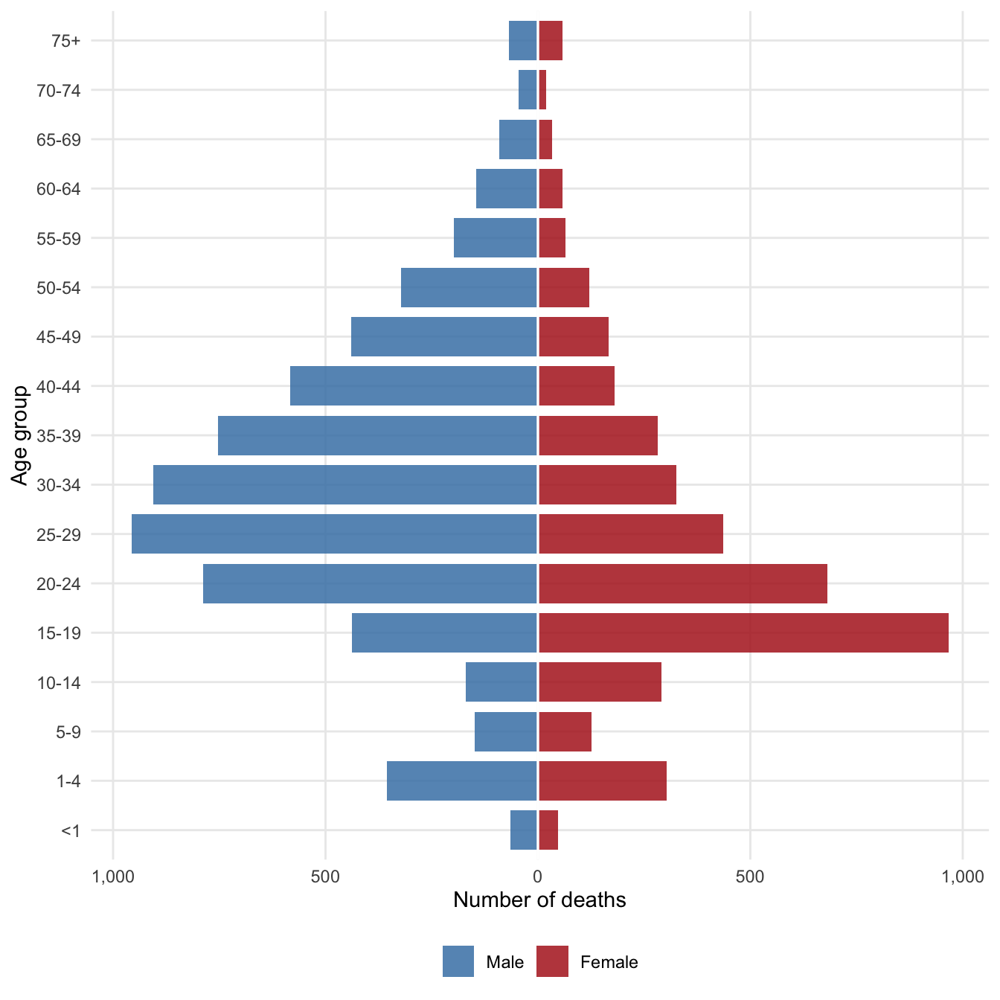
4.2 Age-sex pyramid by intent
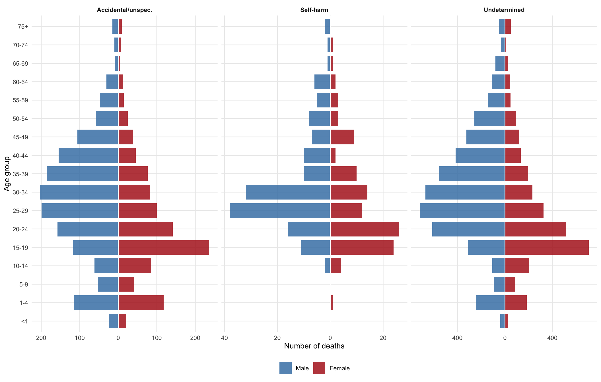
4.3 Age × sex table
Age group | Male | Female | Total | % Male |
|---|---|---|---|---|
<1 | 64 | 47 | 111 | 57.7 |
1-4 | 356 | 303 | 659 | 54.0 |
5-9 | 149 | 126 | 275 | 54.2 |
10-14 | 170 | 291 | 461 | 36.9 |
15-19 | 438 | 966 | 1,404 | 31.2 |
20-24 | 788 | 682 | 1,470 | 53.6 |
25-29 | 956 | 437 | 1,393 | 68.6 |
30-34 | 906 | 326 | 1,232 | 73.5 |
35-39 | 753 | 282 | 1,035 | 72.8 |
40-44 | 583 | 181 | 764 | 76.3 |
45-49 | 439 | 167 | 606 | 72.4 |
50-54 | 323 | 121 | 444 | 72.7 |
55-59 | 198 | 64 | 262 | 75.6 |
60-64 | 146 | 57 | 203 | 71.9 |
65-69 | 91 | 34 | 125 | 72.8 |
70-74 | 45 | 19 | 64 | 70.3 |
75+ | 68 | 58 | 126 | 54.0 |
5 Age-group trends over time
5.1 Age × year heatmap — nominal counts
Each cell shows the absolute number of pesticide poisoning deaths in that age band and calendar year. This reveals which groups contribute the most deaths in volume terms and allows direct comparison across time.
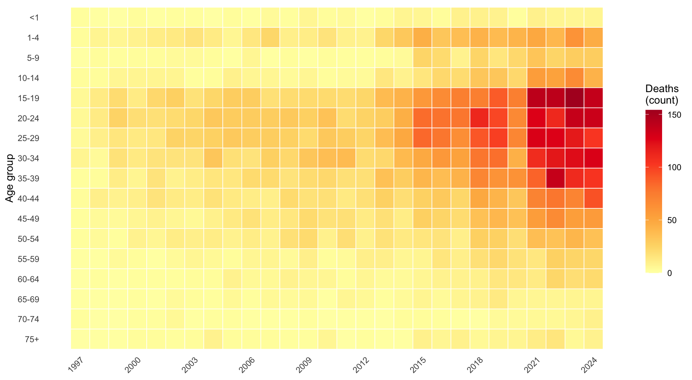
5.3 Estimated annual percentage change (EAPC) by age group
The EAPC is derived from a log-linear regression of annual death counts on calendar year for each age band independently (with a 0.5 continuity correction for zero counts). It estimates the average year-on-year percentage change across 1997–2024. Red = increasing trend; blue = decreasing; faded points indicate p ≥ 0.05. This is the standard WHO / GBD approach for characterising mortality trends by subgroup.
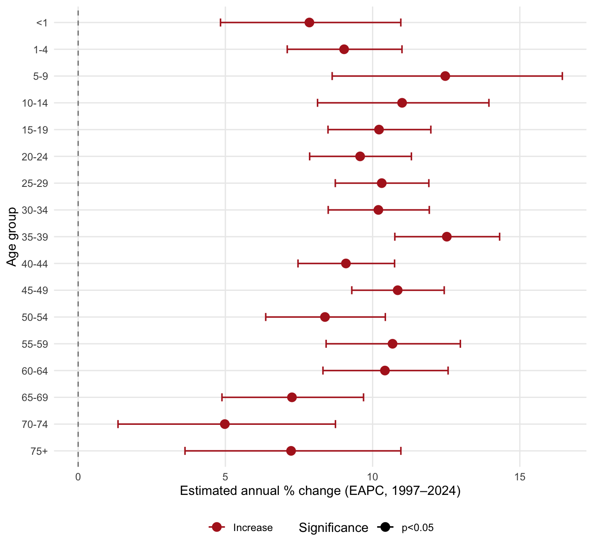
6 Age-group trends by sex
The three figures below stratify the age-trend analysis by sex, enabling direct comparison between male and female pesticide poisoning death patterns — e.g. whether rising counts in older age groups are driven by males, and whether any increase in younger age groups is female-predominant.
6.1 Age × year heatmap — counts by sex
Two side-by-side heatmaps showing raw death counts. Allows comparison of absolute burden between sexes across the age-year space.
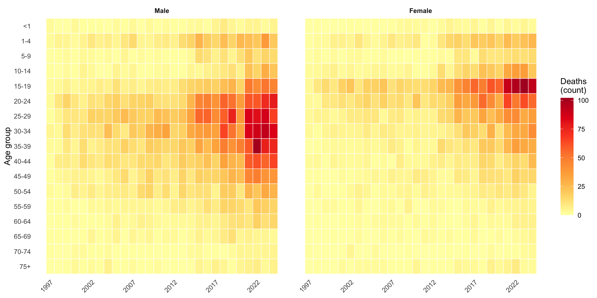
6.3 EAPC by age group — male vs female comparison
Log-linear EAPC estimated separately for each age group × sex combination. Blue circles = males; red triangles = females; faded = p ≥ 0.05. Reading across a row for a given age band shows which sex is driving any trend — and whether both sexes are changing in the same direction and magnitude.
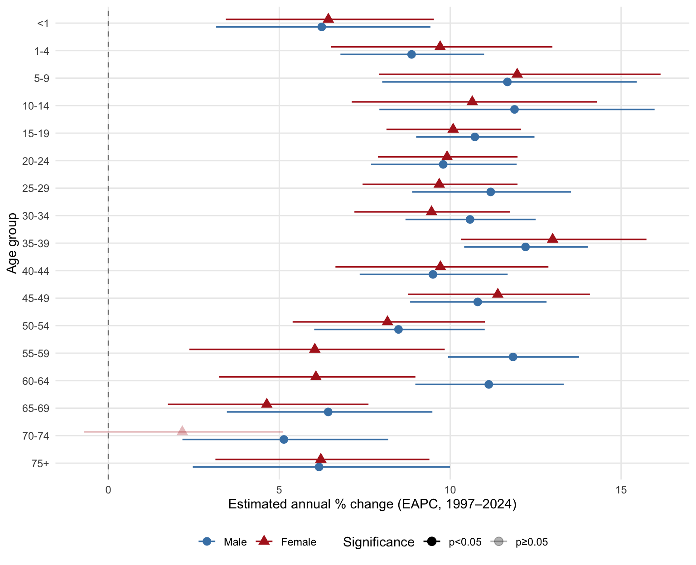
7 Geographic distribution
Counts by province of usual residence (ResProvince), excluding records coded as “Outside SA” or “Unspecified”.
NoteDistrict-level geography capped at 2022
District maps below use the most recent year/years for which district-of-residence geography is available. The public StatsSA Isibalo microdata (used to extend this analysis to 2023-2024 at the national/provincial level) does not carry district-level geography for any year — district data for 2023/2024 would require a separate StatsSA data request. Provincial and national figures throughout this page are current to 2024; district maps are not.
7.1 District hot spots: last 3 years
Pooling the last 3 years stabilizes district-level crude rates and makes potential geographic hot spots easier to interpret than a single-year map.
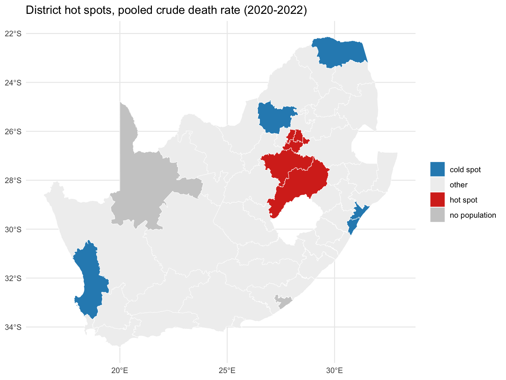
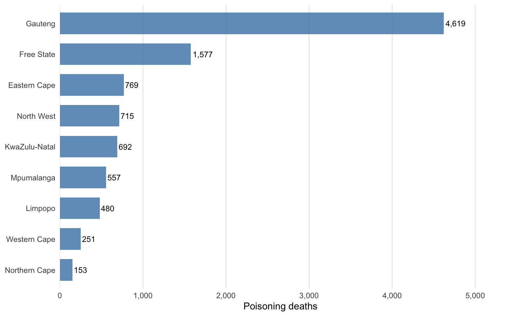
8 Cause breakdown — pesticide poisoning by ICD-10 code
The four validated pesticide-specific ICD-10 codes (StatsSA MACOD 2022, Table 4.12), ranked by total deaths across the study period. Each code corresponds 1:1 to an intent category (X48 = accidental/unspecified, X68 = self-harm, X87 = assault, Y18 = undetermined) — see the Overview methodological note on why “Undetermined” (Y18) dominates.
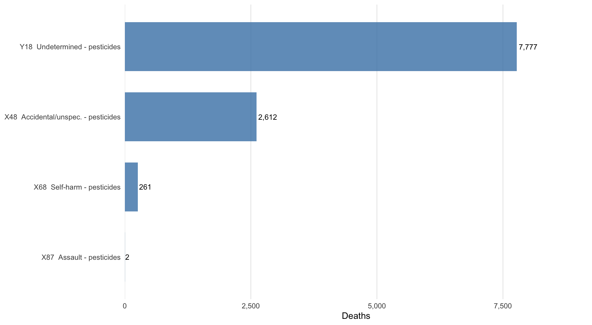
9 Years of Life Lost (YLL)
YLL is computed as the sum of remaining life expectancy at age of death across all registered pesticide poisoning deaths with a known, valid age and documented sex (male or female). Individual ages are mapped to WHO standard remaining life expectancy using linear interpolation of the WHO reference life table (Murray 1994; LE at birth = 82.5 years). Records with unknown age or unknown/other sex are excluded from this section but remain in the death-count analyses above.
NoteReference life table
The WHO/GBD standard life table (Murray 1994) anchors YLL at a life expectancy of 82.5 years at birth, providing a universal comparison benchmark independent of local South African life expectancy — which has fluctuated substantially over the study period due to HIV/AIDS and ART roll-out. Using a fixed standard means YLL reflects potential life lost relative to a best-practice survival frontier rather than current national survival. Standard values used for key ages: age 0 → 82.5 yr; age 20 → 62.8 yr; age 40 → 43.1 yr; age 60 → 24.3 yr; age 75 → 11.8 yr.
9.1 Summary
Age group | Male deaths | Male YLL | Male YLL/death | Female deaths | Female YLL | Female YLL/death | Total deaths | Total YLL |
|---|---|---|---|---|---|---|---|---|
<1 | 64 | 5,281 | 82.5 | 47 | 3,878 | 82.5 | 111 | 9,159 |
1-4 | 356 | 28,668 | 80.5 | 303 | 24,371 | 80.4 | 659 | 53,040 |
5-9 | 149 | 11,350 | 76.2 | 126 | 9,582 | 76.0 | 275 | 20,932 |
10-14 | 170 | 11,964 | 70.4 | 291 | 20,320 | 69.8 | 461 | 32,283 |
15-19 | 438 | 28,716 | 65.6 | 966 | 63,600 | 65.8 | 1,404 | 92,317 |
20-24 | 788 | 47,742 | 60.6 | 682 | 41,627 | 61.0 | 1,470 | 89,369 |
25-29 | 956 | 53,339 | 55.8 | 437 | 24,459 | 56.0 | 1,393 | 77,797 |
30-34 | 906 | 46,237 | 51.0 | 326 | 16,613 | 51.0 | 1,232 | 62,850 |
35-39 | 753 | 34,799 | 46.2 | 282 | 13,033 | 46.2 | 1,035 | 47,832 |
40-44 | 583 | 24,124 | 41.4 | 181 | 7,492 | 41.4 | 764 | 31,617 |
45-49 | 439 | 16,025 | 36.5 | 167 | 6,099 | 36.5 | 606 | 22,124 |
50-54 | 323 | 10,258 | 31.8 | 121 | 3,841 | 31.7 | 444 | 14,099 |
55-59 | 198 | 5,397 | 27.3 | 64 | 1,750 | 27.3 | 262 | 7,147 |
60-64 | 146 | 3,317 | 22.7 | 57 | 1,274 | 22.4 | 203 | 4,592 |
65-69 | 91 | 1,672 | 18.4 | 34 | 619 | 18.2 | 125 | 2,292 |
70-74 | 45 | 649 | 14.4 | 19 | 264 | 13.9 | 64 | 912 |
75+ | 68 | 457 | 6.7 | 58 | 375 | 6.5 | 126 | 832 |
9.2 Total YLL by age group and sex
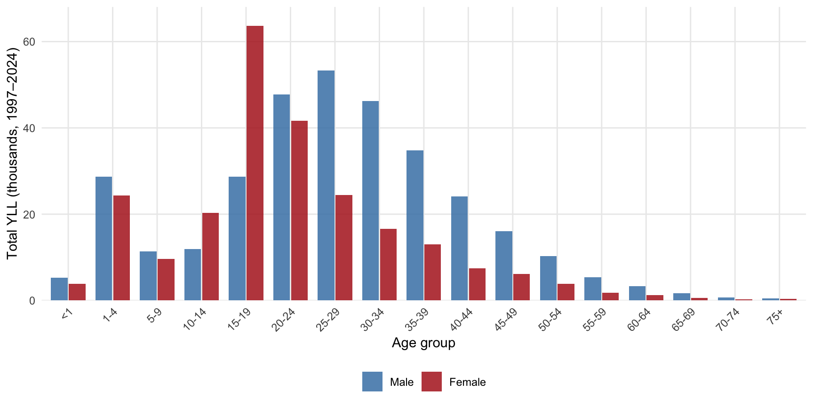
9.3 Mean YLL per death by age group
YLL per death declines monotonically with age because older decedents have fewer remaining standard life-years. The pattern reveals where the per-death burden is highest — typically in younger age groups — even when older groups contribute more deaths in absolute terms.
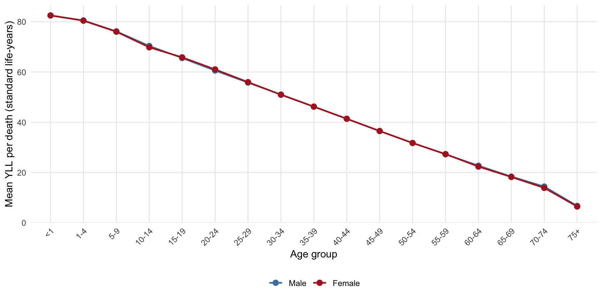
9.4 Annual YLL trend by sex
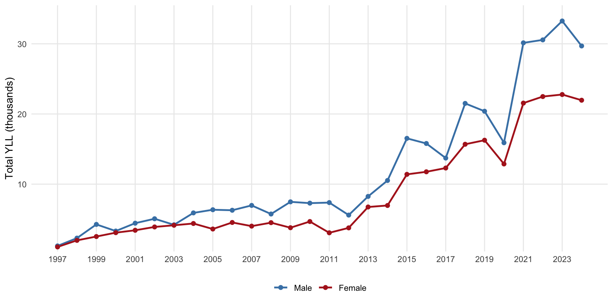
9.5 YLL heatmap — age group × year
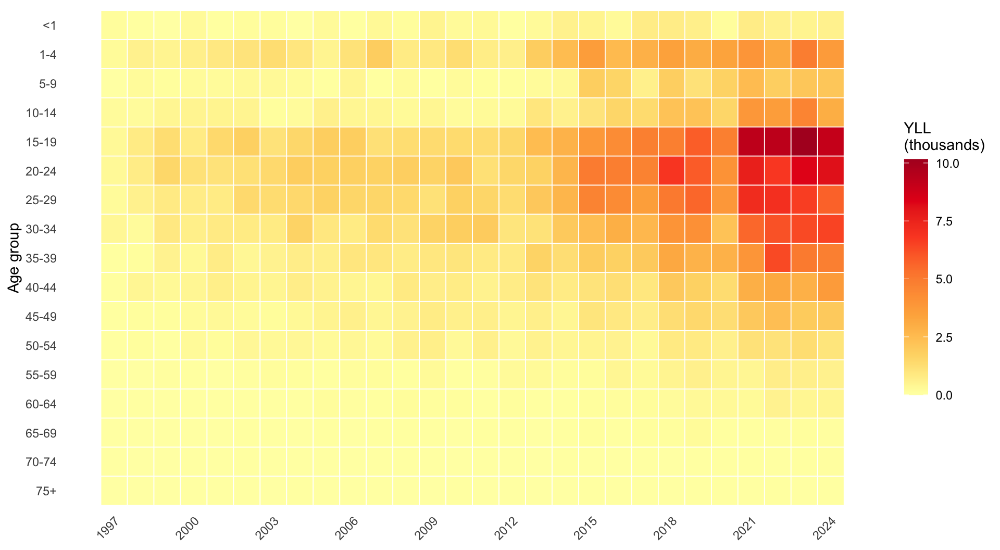
10 Death institution / place of death
The DeathInst field on the South African death notification form records where the death occurred. Values are: Hospital (1), Emergency room / Outpatient (2), Dead on arrival (3), Nursing home (4), Home (5), Other (6), Unknown (8), and Unspecified (9). For the broad grouping below, categories 1, 2, and 4 are combined as Health facility; category 3 (Dead on arrival) is kept separate because it implies the death occurred outside a facility but was certified at one; categories 5 and 6 form Out of facility.
NoteUnspecified records (code 9)
A substantial proportion of records carry code 9 (Unspecified). This likely reflects incomplete form completion rather than a genuinely unknown setting, and mirrors the broader data-quality limitations of the vital registration system. These records are retained in the tables below but excluded from the bar charts to avoid distorting the proportions of known categories. Their exclusion is reported in the figure footnotes.
10.1 X48: distribution by death institution
The chart below shows where accidental/unspecified pesticide poisoning deaths (X48) occurred, excluding the Unknown and Unspecified categories. The “Unspecified” share is shown in the table.
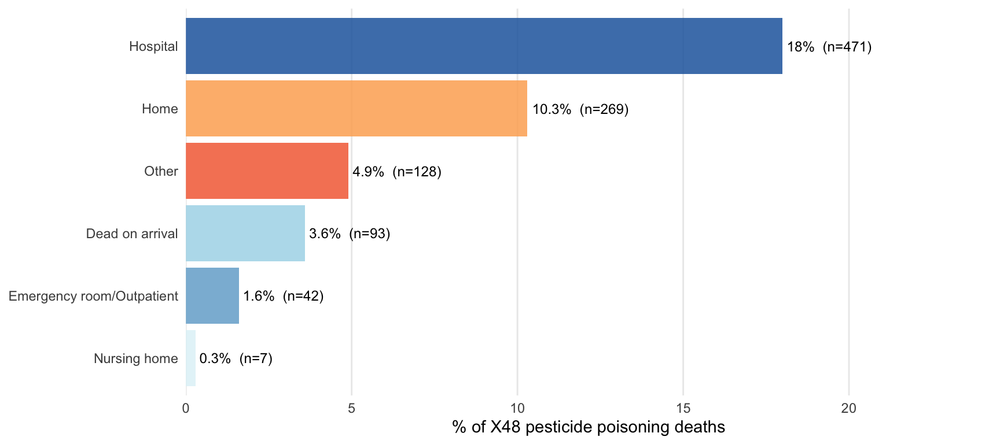
Death institution | Facility group | N | % of X48 |
|---|---|---|---|
Hospital | Health facility | 471 | 18% |
Home | Out of facility | 269 | 10.3% |
Other | Out of facility | 128 | 4.9% |
Dead on arrival | Dead on arrival | 93 | 3.6% |
Emergency room/Outpatient | Health facility | 42 | 1.6% |
Nursing home | Health facility | 7 | 0.3% |
10.2 Intent composition within each facility setting
The proportional stacked bars show how the intent mix varies across facility settings. “Undetermined” (Y18) is the dominant pesticide-poisoning intent code overall (see methodological note above), so settings where intent is hardest to certify are expected to show the highest proportional contribution from this category rather than “Accidental/unspec.”
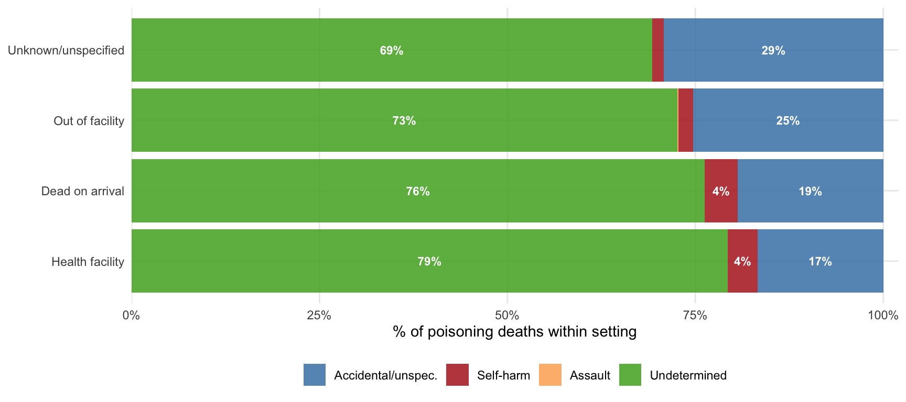
Facility setting | Accidental/unspec. | Self-harm | Assault | Undetermined | Total | % Acc./unspec. |
|---|---|---|---|---|---|---|
Health facility | 520 | 123 | 0 | 2,468 | 3,111 | 16.7% |
Dead on arrival | 93 | 21 | 0 | 366 | 480 | 19.4% |
Out of facility | 397 | 31 | 2 | 1,139 | 1,569 | 25.3% |
Unknown/unspecified | 1,602 | 86 | 0 | 3,804 | 5,492 | 29.2% |
11 Next steps
- Confirm/update this code definition once StatsSA publishes the 2023 MACOD release (current analysis uses the interim validated code set from the 2022 release, Table 4.12).
- Add population denominators to compute age-standardised mortality rates.
- Stratify provincial trends by intent.
- Link to external toxicology data (e.g. NPIS calls, emergency department presentations) for triangulation with IMS and NCoDV forensic data.
- Investigate the spike/dip years visible in the epicurve.
- Apply probabilistic redistribution of the “Accidental” category using forensic correction factors (e.g. from (4)) to obtain intent-adjusted estimates.
12 References
1.
Mew EJ, Padmanathan P, Konradsen F, Eddleston M, Chang SS, Phillips MR, et al. The global burden of fatal self-poisoning with pesticides 2006-15: Systematic review. J Affect Disord. 2017;219:93–104. doi:10.1016/j.jad.2017.05.002
2.
Groenewald P, Matzopoulos R, Afonso E, Bradshaw D. The importance of including manner of (injury) death on the death notification form. S Afr Med J. 2023;113(9):11–2. doi:10.7196/SAMJ.2023.v113i9.915 PubMed PMID: 37882128.
3.
World Health Organization. International statistical classification of diseases and related health problems, 10th revision, volume 2: Instruction manual [Internet]. 5th ed. Geneva: World Health Organization; 2016. Available from: https://apps.who.int/classifications/icd10/browse/2016/en
4.
Groenewald P, Kallis N, Holmgren C, Glass T, Anthony A, Maud P, et al. Further evidence of misclassification of the injury deaths in South Africa: When will the barriers to accurate injury death statistics be removed? S Afr Med J. 2023;113(9):30–5. doi:10.7196/SAMJ.2023.v113i9.836 PubMed PMID: 37882130; PubMed Central PMCID: PMC11017197.
5.
Prinsloo M, Bradshaw D, Joubert J, Matzopoulos R, Groenewald P. South Africa’s vital statistics are currently not suitable for monitoring progress towards injury and violence Sustainable Development Goals. S Afr Med J. 2017;107(6):470–1. doi:10.7196/SAMJ.2017.v107i6.12464 PubMed PMID: 28604314.
6.
Prinsloo M, Mhlongo S, Roomaney R, Marineau L, Mamashela T, Dekel B, et al. Injury mortality in South Africa: A 2009 and 2017 comparison to track progress to meeting sustainable development goal targets. Glob Health Action. 2024;17(1):2377828. doi:10.1080/16549716.2024.2377828 PubMed PMID: 39145429.